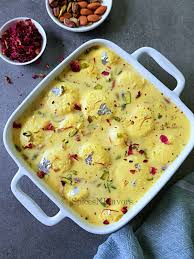

|  |
RasmalaiDescription : Rasmalai is a delicate Indian dessert that captivates with its creamy, milky sweetness. Soft paneer (Indian cottage cheese) dumplings are soaked in a sweetened and flavored milk syrup infused with cardamom, saffron, and chopped nuts. Chilled and served cold, Rasmalai offers a refreshing contrast to spicy Indian meals and is a delightful conclusion to any feast or celebration, embodying the essence of traditional Indian sweets with every bite. |
| Calories | Protein (g) | Fat (g) | Carbohydrates (g) | Fiber (g) | Sodium (mg) |
|---|---|---|---|---|---|
| 250 | 8g | 15g | 22g | 0g | 120mg |